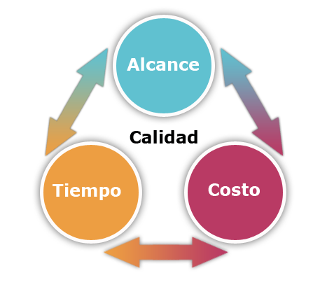

Definición y características del proyecto
Un proyecto es una empresa temporal que se asume con el fin de crear un producto o servicio único
Temporal, quiere decir que todo proyecto tiene un comienzo y un término definitivos. Llega a término cuando se han logrado los objetivos del proyecto, o cuando se hace evidente que no será posible cumplir o no se pueden cumplir los objetivos del proyecto, o cuando ya no existe la necesidad del proyecto y se termina el proyecto.
Producto, Servicio o Resultados Únicos. Los proyectos involucran realizar algo que no ha sido hecho antes y que, por lo tanto, es único.
Elaboración Progresiva. Dado que el producto de cada proyecto es único, las características que distinguen el producto o servicio deben ir elaborándose lentamente. Progresivamente significa “proceder en pasos; continuando uniformente en incrementos”, mientras que elaborado significa “trabajado con cuidado y detalle; desarrollado meticulosamente”. La elaboración progresiva de las características del producto debe coordinarse cuidadosamente con la definición adecuada del alcance del proyecto